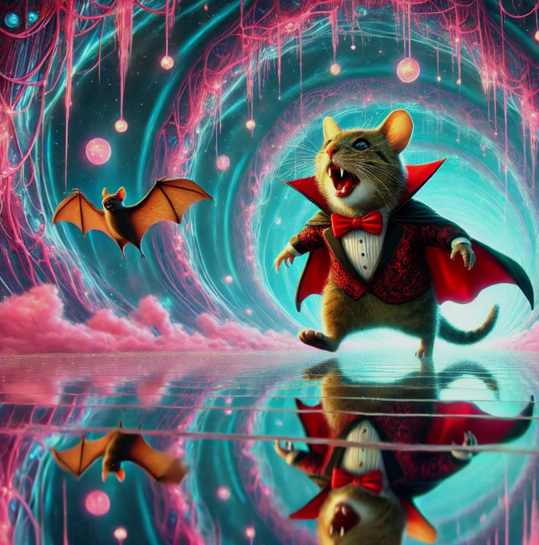

Mouse stepped through the shimmer.
The moment his paw touched the surface, the world flickered like candlelight in a draft. Then, everything changed.
He stumbled forward into a space that looked almost—but not quite—like their own cottage. The walls pulsed softly, as if breathing. The furniture had shifted ever so slightly. The air was thick with electricity and whispers Mouse couldn't quite hear.
Bat flapped in behind him and landed on the edge of a floating book. "Where are we?"
Mouse scanned the room, tail flicking. Everything was familiar yet disturbingly wrong. A hallway stretched where there had never been one. Paintings on the walls moved in slow motion, shifting their eyes to follow them. A chair rocked itself gently, creaking like it remembered something.
“I think we stepped into a different version of home,” Mouse whispered. “A parallel one. And someone—or something—was waiting for us.”
The shimmer closed behind them with a soft thrum, sealing them in.
Bat hovered closer to Mouse’s ear. “Do you feel that?”
“Yes,” Mouse said. “Magic. But old magic. The kind that remembers.”
Suddenly, the world ahead began to shift again—like glass being warped in slow motion. Two doorways emerged before them, each swirling with wild, unpredictable energy.
One was kaleidoscopic, vibrant and alive, pulsing with colors Mouse had never seen before. The air around it buzzed with strange rhythms, and the scent of citrus and stars filled their noses.
The other was darker, flipped and distorted—as if gravity itself didn’t know which way was up. The air felt colder, and everything inside it seemed to drift sideways, like reality was bending inward.
“Two parallel realities,” Mouse murmured. “Each one calling us in its own way.”
The choice was theirs.